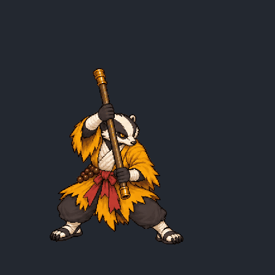
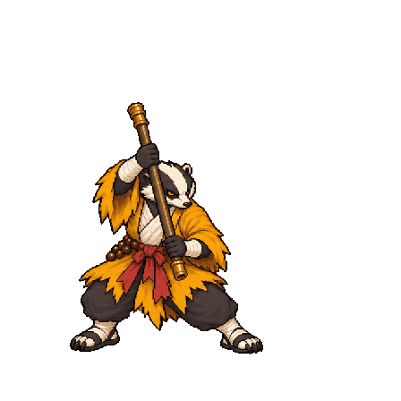
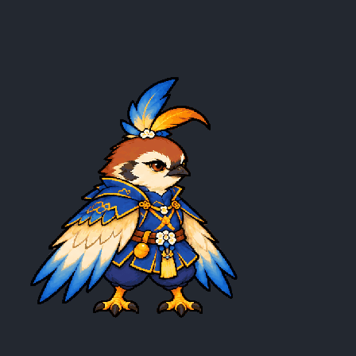
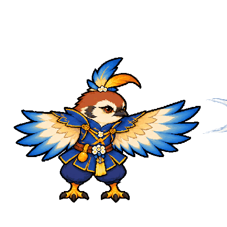
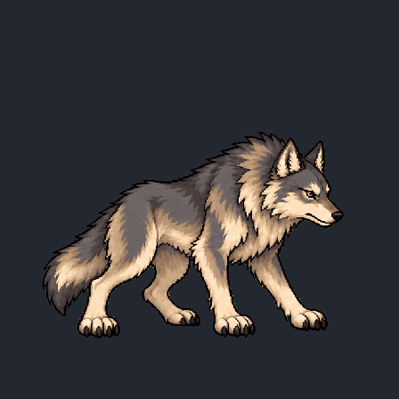
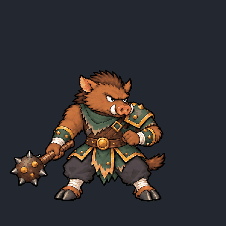
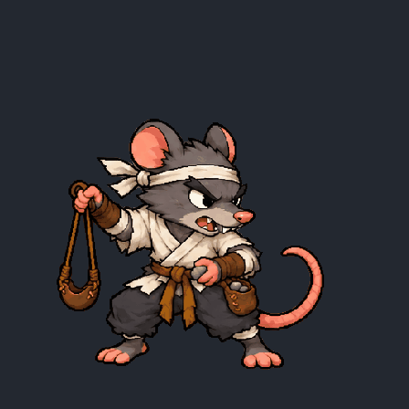
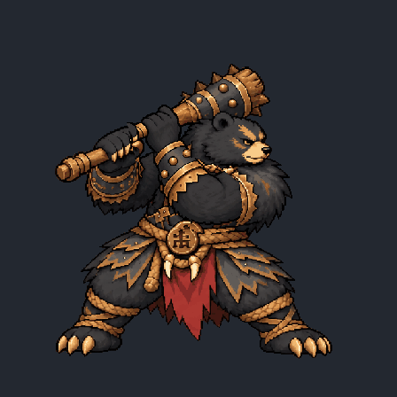
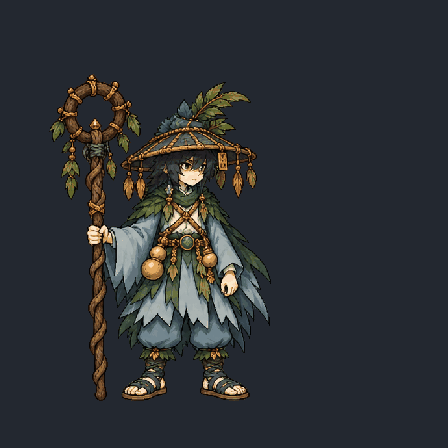

护寺棍僧 · 右上出棍
候选复核通过 · 6个身体姿势 · 9个显示阶段

正常 · 1.15秒半速 · 1.95秒整套逐帧图 逐帧检查记录 素材说明
展开全部9个显示帧
按播放顺序排列；点击图片查看原图。相同身体可因残影或弹体位置不同而显示多次。
第1帧 · 0毫秒第2帧 · 100毫秒第3帧 · 200毫秒第4帧 · 230毫秒第5帧 · 260毫秒第6帧 · 300毫秒第7帧 · 340毫秒
第8帧 · 500毫秒 第9帧 · 680毫秒
第9帧 · 680毫秒 山野猎户 · 拉弓放箭
候选复核通过 · 6个身体姿势 · 12个显示阶段
正常 · 1.76秒半速 · 3.22秒
整套逐帧图 逐帧检查记录 素材说明
展开全部12个显示帧
按播放顺序排列；点击图片查看原图。相同身体可因残影或弹体位置不同而显示多次。
狐火小妖 · 双掌交替火攻
候选复核通过 · 6个身体姿势 · 14个显示阶段
正常 · 1.75秒半速 · 3.15秒
整套逐帧图 逐帧检查记录 素材说明
展开全部14个显示帧
按播放顺序排列；点击图片查看原图。相同身体可因残影或弹体位置不同而显示多次。
 第1帧 · 0毫秒第2帧 · 160毫秒第3帧 · 300毫秒第4帧 · 360毫秒第5帧 · 420毫秒第6帧 · 500毫秒第7帧 · 650毫秒第8帧 · 850毫秒第9帧 · 880毫秒第10帧 · 910毫秒第11帧 · 940毫秒第12帧 · 970毫秒第13帧 · 1050毫秒
第1帧 · 0毫秒第2帧 · 160毫秒第3帧 · 300毫秒第4帧 · 360毫秒第5帧 · 420毫秒第6帧 · 500毫秒第7帧 · 650毫秒第8帧 · 850毫秒第9帧 · 880毫秒第10帧 · 910毫秒第11帧 · 940毫秒第12帧 · 970毫秒第13帧 · 1050毫秒 第14帧 · 1200毫秒
第14帧 · 1200毫秒山雀精 · 挥翼风刃
候选复核通过 · 6个身体姿势 · 11个显示阶段

正常 · 1.35秒半速 · 2.4秒整套逐帧图 逐帧检查记录 素材说明
展开全部11个显示帧
按播放顺序排列；点击图片查看原图。相同身体可因残影或弹体位置不同而显示多次。
 第1帧 · 0毫秒第2帧 · 160毫秒第3帧 · 280毫秒第4帧 · 370毫秒第5帧 · 390毫秒
第1帧 · 0毫秒第2帧 · 160毫秒第3帧 · 280毫秒第4帧 · 370毫秒第5帧 · 390毫秒
第6帧 · 410毫秒第7帧 · 430毫秒第8帧 · 450毫秒第9帧 · 490毫秒第10帧 · 650毫秒第11帧 · 850毫秒山狼 · 前探咬合
候选复核通过 · 6个身体姿势 · 7个显示阶段

正常 · 1.17秒半速 · 1.99秒整套逐帧图 逐帧检查记录 素材说明
展开全部7个显示帧
按播放顺序排列；点击图片查看原图。相同身体可因残影或弹体位置不同而显示多次。
山猪 · 单手挥锤
候选复核通过 · 6个身体姿势 · 7个显示阶段

正常 · 1.4秒半速 · 2.45秒整套逐帧图 逐帧检查记录 素材说明
展开全部7个显示帧
按播放顺序排列；点击图片查看原图。相同身体可因残影或弹体位置不同而显示多次。
灰鼠 · 投石与收索
候选复核通过 · 8个身体姿势 · 13个显示阶段

正常 · 1.85秒半速 · 3.35秒整套逐帧图 逐帧检查记录 素材说明
展开全部13个显示帧
按播放顺序排列；点击图片查看原图。相同身体可因残影或弹体位置不同而显示多次。
熊山君 · 双手重棍
候选复核通过 · 6个身体姿势 · 7个显示阶段

正常 · 1.65秒半速 · 2.9秒整套逐帧图 逐帧检查记录 素材说明
展开全部7个显示帧
按播放顺序排列；点击图片查看原图。相同身体可因残影或弹体位置不同而显示多次。
药灵童子 · 治疗施放
候选复核通过 · 6个身体姿势 · 10个显示阶段

正常 · 1.63秒半速 · 2.91秒整套逐帧图 逐帧检查记录 素材说明
展开全部10个显示帧
按播放顺序排列；点击图片查看原图。相同身体可因残影或弹体位置不同而显示多次。